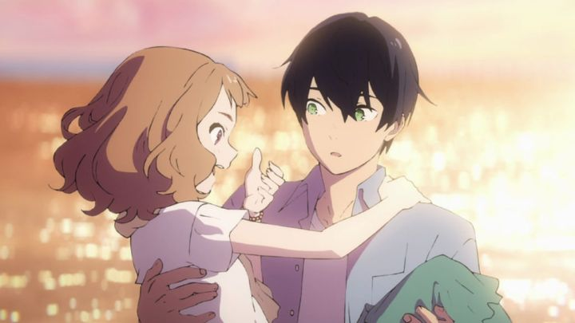

In the late 2010's, I've noticed that more anime romance films were being produced. This could be perhaps because producers were catering more towards female audiences (opposed to violent and sexualized films for boys), or maybe American distributers were just licensing more of them as they continue to compete with each other for content. However, part of this trend seems to be "romances where the romantic interest has some severe handicap." I first noticed it in 2016's "A Silent Voice" (deafness), then in 2018's "I Want To Eat Your Pancreas" (cancer), and now in 2020's "Josee, the Tiger and the Fish" (wheelchair-bound). It's not like this isn't done in live-action films either (cancer in particular is a common desirable trait in romance, apparently), but I'm of mixed feelings with what could now be called a trend. Sure, "A Silent Voice" was excellent, but are we just taking advantage of a dramatic plot device, at expense to real people that suffer with the conditions? Or is this actually a good thing, portraying people in staring roles that would rarely be seen otherwise? Overthinking things, I'll get to the point: this is a review of the 2020 anime film "Josee, the Tiger and the Fish." It wants to be more like "Voice," but in tone and scope, feels a lot more like "Pancreas," with a hint of the French live-action film "The Intouchables." It's about Tsuneo, a college student juggling multiple part-time jobs, who by chance meets and helps a young woman, wheelchair-bound, when out with her grandmother. The grandmother offers him a job as the girl's caretaker. Insisting on calling herself "Josee," the girl is selfish and mean (immediately calling Tsuneo a "pervert" when he does nothing to warrant it, even less believable than most other instances in anime), and just generally socially awkward and shy. As the months go by, the sour relationship between the two grows more into understanding and friendship, until tragedy strikes them both, and they both have to face the harshness of reality. This could have very well been called "Wheelchair: The Movie." That's actually a good thing, even if it's a bit overbearing. Without ever explaining why Josee is stuck in a wheelchair, we witness her struggle to do things on her own, always dependent on her aging grandmother. This is less true inside the house (where, for her safety, her grandmother insists she stays), but very true outside, in a crowded world of bustling and inconsiderate people, who might bully her, or simply refuse to notice her. In the best-case, Josee has to struggle with poor accessibility in buildings and sidewalks. Later on, we see a second perspective from someone who suddenly loses their ability to walk, making them also stuck in a chair; Josee's attitude then makes more sense, to have their hopes and dreams largely dashed, forever just a burden for others until they die of old age. If nothing else, you leave the movie wanting to be more considerate of those in this situation, making it an effective public-service announcement.Some of the metaphors are a little awkward though. Josee takes her grandmother's warning of the outside world to heart ("the world is filled with beasts", aka "bad people"), and likens passersby as wild tigers, mysterious and dangerous. Another symbol is the ocean, with arbitrary importance placed on "what it tastes like," eventually coming back to the taste of tears (the director's choice of shots in those cuts makes it less obvious than it should be). The one metaphor I actually liked was to compare Josee to a mermaid stuck on land, which eventually plays into the use of "The Little Mermaid" in the plot.  Above all else, Josee is simply unlikable for most of the movie. Even if I understood why she was a brat, through no fault of her own, she was still a brat nonetheless, and a dependent one at that. She and Tsuneo have very little chemistry, making their eventual romance seem out of place, especially when a long-time friend of his also confesses, sparking a love-triangle. There were defintely better ways to write the characters, and the romance could have been left out entirely, but was kept in, likely to make the movie easier to market (sure enough, when watching in a theater audience, I heard a lot of swooning and giggles during the climatic happy ending). Also, some of the attempts at comedy were also misplaced (mostly from the grandmother, a shame since she was otherwise an excellent character). I'm nitpicking a lot, when there were some good aspects. Again, I liked that handicaped people are getting a movie, and the subplot and metaphor regarding mermaids and Josee's dream to become an illustrator worked well. Most of the movie is quite servicable for the genre-film it is. But now, there are increasingly more choices to pick from to watch, both in general-romance and this specific sub-genre. At it's best, it's fun, but mostly, it feels just "fine."It's interesting that different anime studios are attempting this type of movie at least once: this one is from studio Bones. They've restrained themselves a bit in terms of characters designs and character animation, perhaps to keep things more grounded and believable, but this results in a lukewarm animation that doesn't particularly pop from a theatrical-film's budget. Likewise, music and acting (I watched Funimation's English dub) were OK, but not much more than that.A bit of research shows "Josee, the Tiger and the Fish" is based on an older short story of the same name by Seiko Tanabe. It must be a popular one too, as it was adapted multiple times into film in Asia. Curiously, the story synopsis for the 2003 live-action Japanese film differs from what is shown in this animated version, including a wildly different ending. A summary for the original story isn't as easy to find though, so I don't know which adaptation, if any, is truest to it. It makes for interesting content to dive into however.Anyway, I think "Josee, the Tiger and the Fish" is a fine movie, but its lead characters and awkward metahpors pull it down a bit. And without anything else exceptional about it, I'd only recommend it to those who are specifically fans of the genre and have already watched everything else. Although the wheelchair discussion might make it worthwhile for everyone to watch at least once.
- "Ani" More reviews can be found at : https://2danicritic.github.io/ Previous review: review_Jormungand Next review: review_Joseph_-_King_of_Dreams